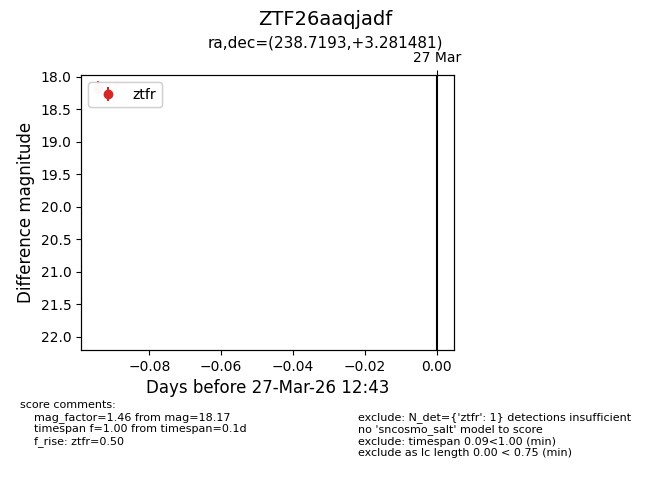
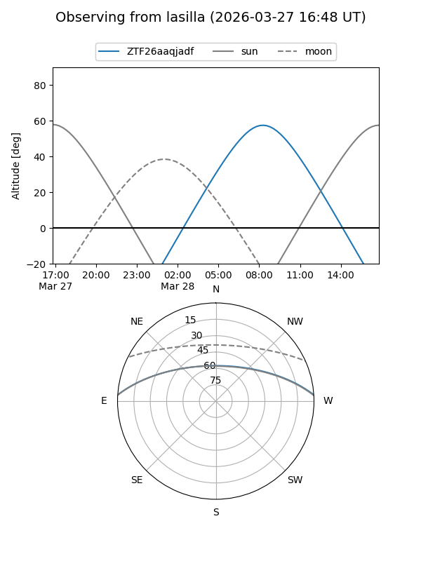
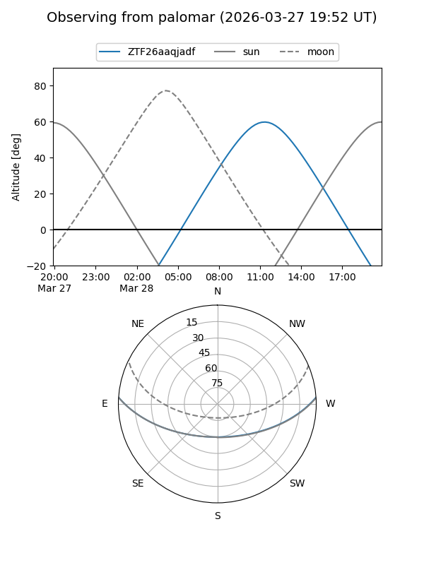

ZTF26aaqjadf
Target ZTF26aaqjadf at 2026-03-27 12:45
Aliases and brokers:
FINK: link
Lasair: link
ALeRCE: link
alt names
ZTF26aaqjadf (ztf,fink_ztf)
Coordinates:
equatorial (ra, dec) = 238.7193,+3.28148
equatorial (HMS+DMS) = 15:54:52.62,+03:16:53.33
galactic (l, b) = (12.5572,+40.15724)
Flags:
Photometry:
last ztfr=18.17
1 ztfr detections
Lightcurve

Visibility


Additional plots